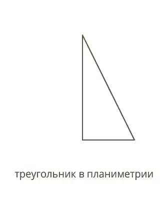
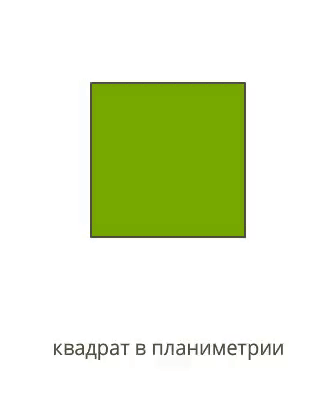
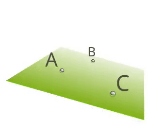
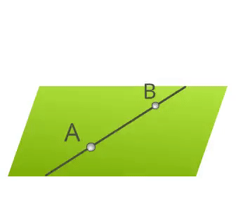
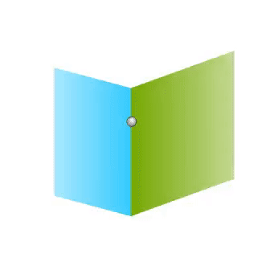

Стереометрия - часть 1. Аксиомы стереометрии
Эта статья является частью цикла статей о стереометрии
Ссылки на другие части:
- Вы здесь;
- Стереометрия - часть 2. Величины геометрических тел;
- Стереометрия - часть 3. Взаимное расположение точек, прямых, плоскостей.
Введение
До этого момента в школьном курсе вы рассматривали лишь планиметрию: плоские фигуры с различным их расположениями по осям X и Y. А теперь ко всему этому добавляется третье измерение и ось Z…
Сухим языком математики: стереометрия изучает фигуры и их свойства в пространстве. Образно говоря, стереометрия рассматривает всё, что можно склеить из бумаги, сколотить из досок, построить из кирпичей и т. п.
Основными объектами стереометрии являются точки, прямые, плоскости и замкнутые пространственные фигуры (например: куб, пирамида, параллелепипед, шар, конус).
Множество всех точек, рассматриваемых в стереометрии, называется пространством. Любое множество точек называется фигурой. Замкнутая фигура в стереометрии — это множество точек, ограниченных поверхностью.
Пример
На анимированных иллюстрациях наглядно показаны связь и различие плоских и пространственных фигур.
 Так как каждая прямая и каждая плоскость содержат какие-либо точки, то прямая и плоскость тоже являются фигурами стереометрии. Плоскость бесконечна и делит пространство на две части.
Договоримся об обозначениях
Точки обозначаются прописными латинскими буквами: 𝐴,𝐵,𝐶,𝐷,𝐸,𝐹 … Прямые обозначаются строчными латинскими буквами: 𝑎,𝑏,𝑐,𝑑,𝑒,𝑓… Плоскости обозначаются греческими буквами: α,β,γ и т. д.
Аксиомы стереометрии
В основе каждого курса геометрии лежат аксиомы — утверждения, которые принимаются без доказательств. С помощью этих утверждений определяются остальные объекты и их свойства.
В Евклидовой геометрии основные свойства точки, прямой и плоскости, которые относятся к их взаимному расположению, выражены в 20 аксиомах. Сформулируем три основные.
Аксиома
Через любые три точки, которые не лежат на одной прямой, можно провести только одну плоскость.
Аксиома
Если две точки прямой принадлежат плоскости, то все точки этой прямой принадлежат плоскости.
Аксиома
Если две различные плоскости имеют общую точку, то они пересекаются по прямой, проходящей через эту точку.
Есть и другие аксиомы, но они не столь важны для наших дальнейших рассуждений.
Можете проверить, как материал уложился в голове, и приступать ко второй части, где мы поговорим об основных характеристиках пространственных фигур и даже научимся решать несколько задач из ЕГЭ.